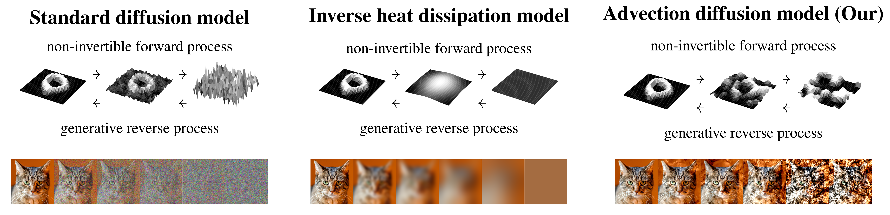
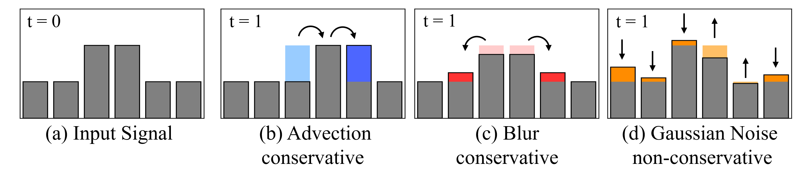
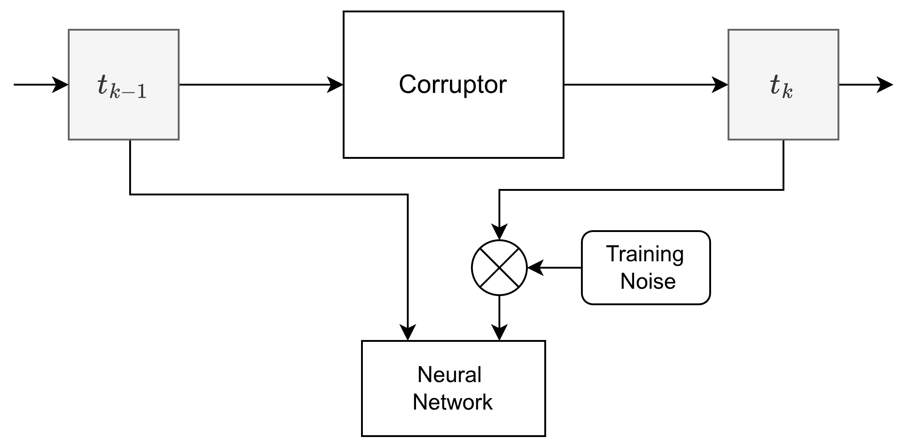
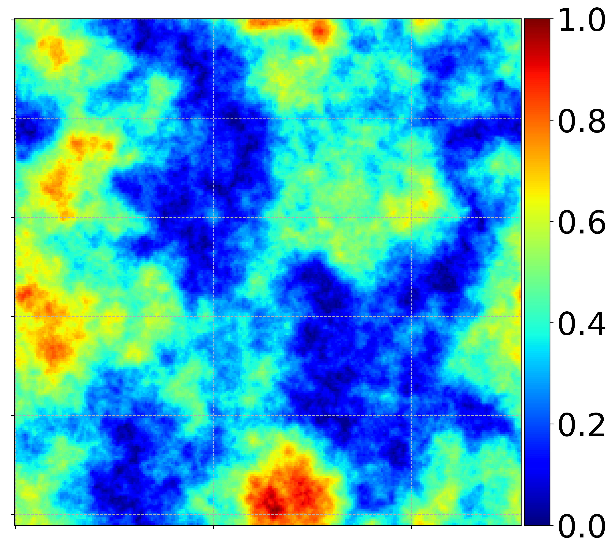
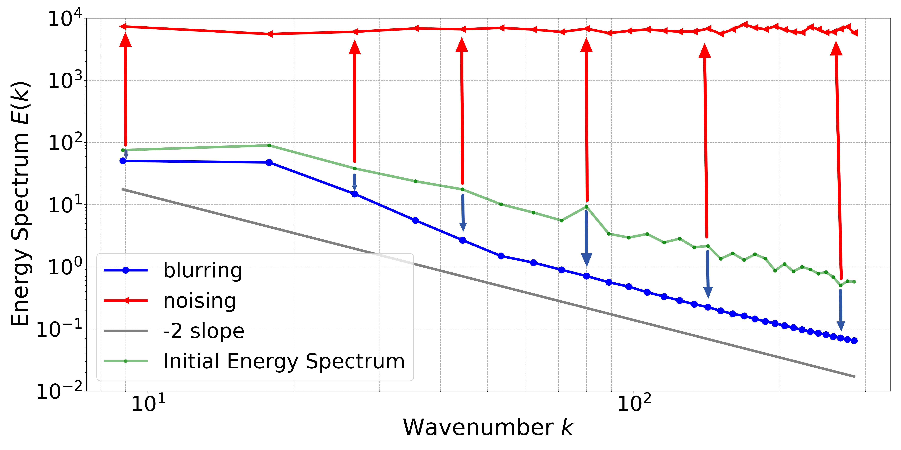
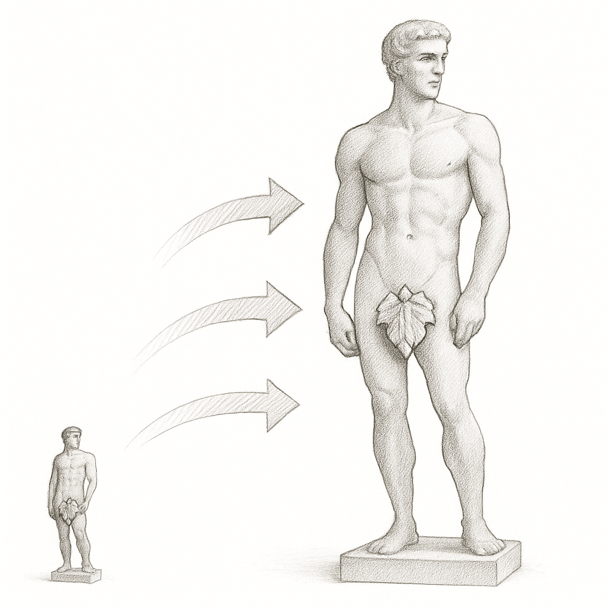
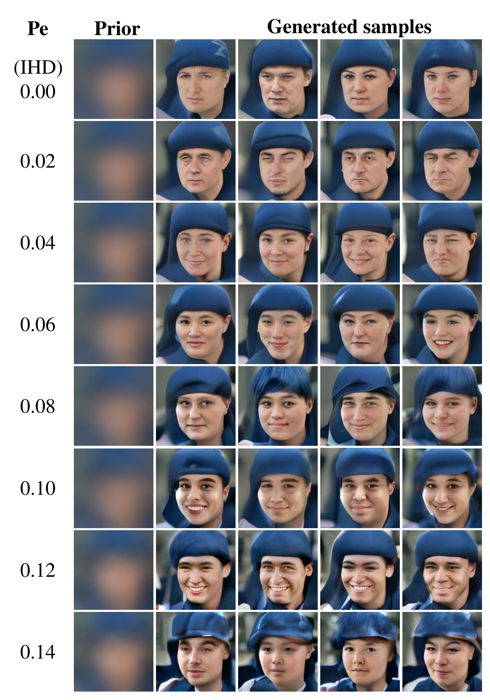

Beyond Blur
by
Grzegorz Gruszczynski
Jakub Meixner
Michal Wlodarczyk
Przemyslaw Musialski

Beyond Blur
A Fluid Perspective on Generative Diffusion Models
The generative model that integrates
the advection (shift) term
along blurring (averaging)
and a random reaction (Gaussian noise)
Diffusion Model Families

Contribution

Corruption process
(a) input image
(b) advection and
(c) blur “redistribute” the intensities but preserve the total “mass”, i.e., pixel-intensity sum
(conservative).
(d) Gaussian noise adds or subtracts “mass” (non-conservative).
Math Background
Our forward pass formulates image corruption via a physically motivated PDE that couples directional advection with isotropic diffusion and Gaussian noise,\[ \frac{\partial u}{\partial t} \;+\; \underbrace{\nabla \cdot\! (\mathbf{v} \! \,u) }_{\text{advection}} \;=\; \underbrace{\nabla \cdot ( \alpha \, \nabla u)}_{\text{diffusion}} + \underbrace{\dot{Q}(t) }_{\text{reaction}}. \]
Overview of the NN training pipeline

The image corruptor applies the advection--diffusion operator during each of the discrete time steps. The NN is trained on pairs of images destroyed up to the prescribed time, as dictated by the scheduler.
Turbulent Velocity Field

Generated velocity field. Colored by the velocity field magnitude (normalized).
Energy Spectrum

Comparison of the Energy Spectrum of an image subjected to different corruption processes.
Scale control

- To quantify the ratio of advective transport to diffusion rate,
we use a dimensionless Peclet number, $Pe = VL/\alpha$.
- The Fourier number, $Fo = \alpha t / (L \cdot L)$, can be considered as non-dimensional
time.
Generated samples

The baseline values refer to purely blurring approach at $Pe=0$.
Results
We evaluate the FID and Precision-Recall-Density-Coverage (PRDC) metrics
on the FFHQ 128x128 dataset.
| Pe | FID ↓ | P ↑ | R ↑ | D ↑ | C ↑ |
|---|---|---|---|---|---|
| 0 (IHD) | 55.87 | 0.798 | 0.109 | 0.762 | 0.482 |
| 0.02 | 56.57 | 0.797 | 0.102 | 0.806 | 0.491 |
| 0.04 | 51.44 | 0.815 | 0.115 | 0.921 | 0.539 |
| 0.06 | 36.64 | 0.826 | 0.243 | 1.040 | 0.665 |
| 0.08 | 37.41 | 0.817 | 0.247 | 1.043 | 0.662 |
| 0.10 | 42.88 | 0.764 | 0.187 | 0.854 | 0.556 |
| 0.12 | 48.62 | 0.688 | 0.183 | 0.683 | 0.510 |
Conclusions
The advection term improves the quality of generated images compared to the baseline approach (blurring only).